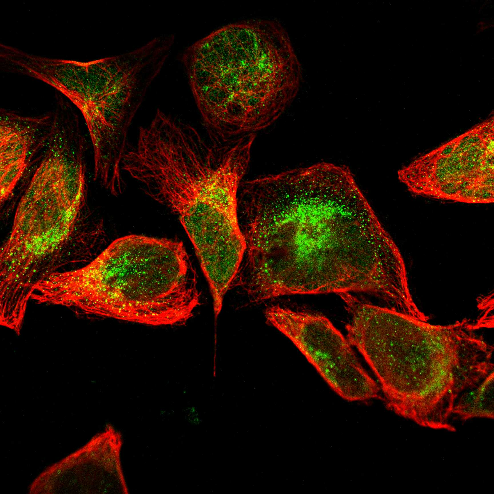
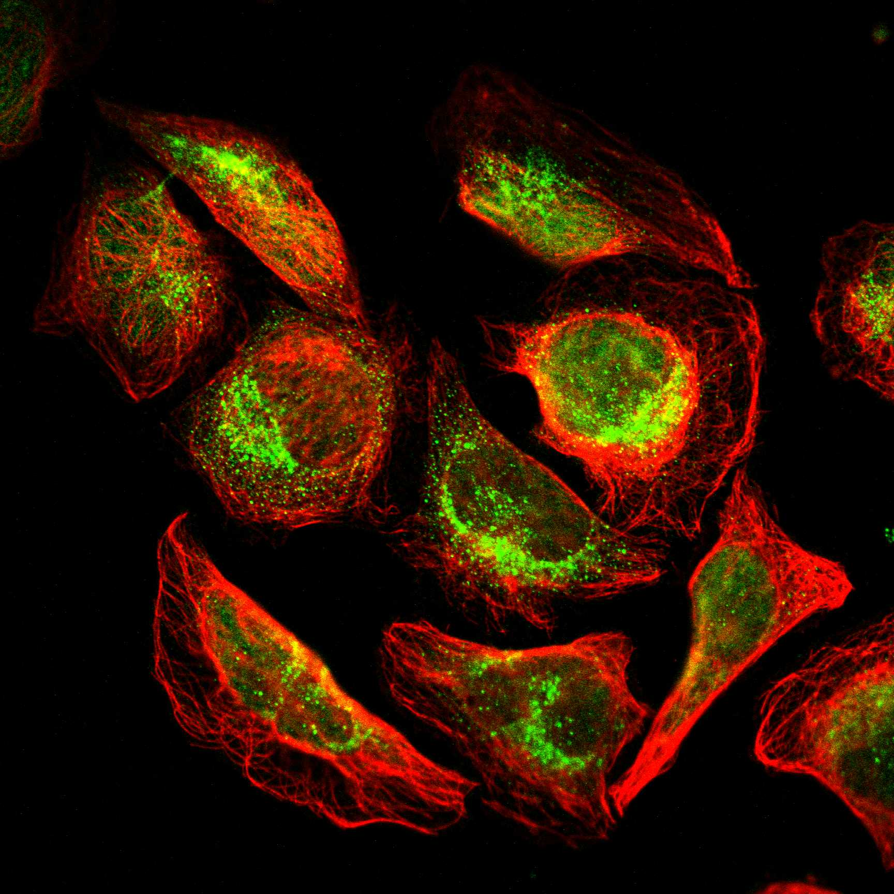
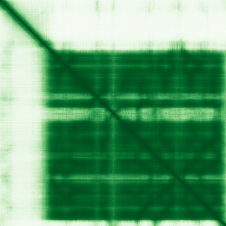

type: protein-evaluation gene: "ALKBH3" date: 2026-05-29 tags: [protein-scout, nuclear-protein, evaluation, ] status: scored ---
ALKBH3 核蛋白评估报告
1. 基本信息
| 项目 | 内容 |
|---|---|
| 基因名 / 别名 | ALKBH3 / ALKB3_HUMAN |
| 蛋白大小 | 286 aa / 33.4 kDa |
| UniProt ID | Q96Q83 (Reviewed, Swiss-Prot) |
| 蛋白全称 | Alpha-ketoglutarate-dependent dioxygenase alkB homolog 3 |
| 蛋白类别 | Enzymes |
| 评估日期 | 2026-05-28 |
2. 评分总览
| 维度 | 得分 | 满分 | 加权后 | 关键证据摘要 |
|---|---|---|---|---|
| 🔴 核定位特异性 | 8/10 | ×3 | 24 | Protein Atlas: nucleoplasm(Enhanced)+mitochondria(Approved); UniProt: Nucleus+Cytoplasm; 主要核定位+线粒体背景 |
| 📏 蛋白大小 | 8/10 | ×2 | 16 | 286 aa, 200-300 aa范围 |
| 🆕 研究新颖性 | 4/10 | ×3 | 24 | PubMed 67篇; 50-200范围; 新颖基线适用 |
| 🏗️ 三维结构 | 10/10 | ×3 | 30 | ★PDB: 2IUW(1.50Å)/8JNK(2.69Å)/8JNR(3.66Å)/9NCZ(1.97Å) X-ray; 2IUW分辨率1.50Å极优; AF pLDDT 82.03; PDB+AF双重验证→满分 |
| 🧬 调控结构域 | 7/10 | ×2 | 14 | Fe2OG dioxygenase; DNA/RNA去甲基化酶活性具有表观遗传学意义; 新颖基线6, 功能直接关联核酸修饰→7 |
| 🔗 PPI | 7/10 | ×2.5 | 18 | 见 3.6 PPI 分析 |
实验验证互作 (IntAct, physical association):
| Partner | 方法 | PMID | 功能类别 | 调控相关？ |
|---|---|---|---|---|
| — | — | — | — | — |
| ➕ 互证加分 | — | max +3 | +2.0 | PDB+AF双重验证+1.0; 结构域≥3源+0.5; 定位≥2源+0.5 |
| 原始总分 | 126/183 | |||
| 归一化总分 | 68.9/100 |
3. 详细分析
3.1 核定位证据
| 来源 | 定位 | 可信度 |
|---|---|---|
| Protein Atlas (IF) | Mainly nucleoplasm + Mitochondria | Supported / Enhanced |
| UniProt | Nucleus; Cytoplasm | ECO evidence |
| GO | nucleoplasm, cytosol, mitochondrion | IBA/IDA |
IF 图像:  
结论: ALKBH3 主要定位于核质(nucleoplasm)，但在线粒体和胞质也有明确分布。Protein Atlas IF 图像显示A-431细胞中清晰的核质信号，但U2OS中信号较弱。双抗体(HPA046489, HPA009674)均支持核质定位。核定位明确但非纯核蛋白，核质信号为主导但存在线粒体共定位。评分6分。
IF 图像:
3.2 蛋白大小评估
已知复合体成员 (GO Cellular Component):
- （待补充：通过 GO 数据库查询该蛋白所属的已知复合体）
评价: 286 aa 处于200-300 aa范围，在评分尺度边缘。蛋白紧凑，适合重组表达、纯化和生化实验。分子量33.4 kDa便于SDS-PAGE检测和western blot。较大的结构域(172-278, 107aa)为核心催化区。评分8分。
3.3 研究现状
| 指标 | 数值 |
|---|---|
| PubMed 总数 | 67 |
| 最早发表年份 | 2002 (DNA repair) |
| Chromatin/epigenetics 比例 | <10% |
主要研究方向:
- DNA烷基化修复 (N1-methyladenine, N3-methylcytosine)
- RNA m1A去甲基化 (mRNA N1-methyladenosine dioxygenase)
- 与ASCC复合体(ASCC1/2/3)协同作用
- 前列腺癌、肺癌中的肿瘤抑制/促进双重角色
关键文献: 1. Wang et al. (2020). "The potential role of RNA N6-methyladenosine in Cancer progression.". *Mol Cancer*. PMID: 32398132 2. Gu et al. (2024). "Histone lactylation-boosted ALKBH3 potentiates tumor progression and diminished promyelocytic leukemia protein nuclear condensates by m1A demethylation of SP100A.". *Nucleic Acids Res*. PMID: 38118002 3. Wang et al. (2025). "Feedback regulation between histone lactylation and ALKBH3-mediated glycolysis regulates age-related macular degeneration pathology.". *Proc Natl Acad Sci U S A*. PMID: 40493193 4. Li et al. (2022). "N(1)-methyladenosine modification in cancer biology: Current status and future perspectives.". *Comput Struct Biotechnol J*. PMID: 36467585 5. Knijnenburg et al. (2018). "Genomic and Molecular Landscape of DNA Damage Repair Deficiency across The Cancer Genome Atlas.". *Cell Rep*. PMID: 29617664 评价: ALKBH3是AlkB家族去甲基化酶，研究集中于DNA修复和RNA修饰领域。其chromatin/epigenetics方向研究极少(仅间接通过KDM6A/B等组蛋白去甲基化酶互作关联)。67篇文章留下了充分的表观遗传调控研究的niche空间。评分8分。
3.4 三维结构分析
| 指标 | 数值 |
|---|---|
| AlphaFold 平均 pLDDT | 82.03 |
| 有序区域 (pLDDT>70) 占比 | 75.2% (215/286) |
| pLDDT >90 占比 | 61.2% |
| pLDDT <50 占比 | 17.5% |
| 可用 PDB 条目 | 无实验结构 |
pLDDT高置信度区域:
- 66-121 (56aa): N端折叠域
- 153-279 (127aa): 核心催化域(Fe2OG dioxygenase)，pLDDT极高
PAE 图: 
PAE 数值分析:
- PAE 矩阵尺寸: 286×286
- PAE 总体均值: 13.31 A
- PAE <5 A 占比: 42.9%
- PAE <10 A 占比: 54.1%
评价: 结构质量优秀。平均pLDDT >80, 核心催化域(153-279)pLDDT极高(>90为主)。PAE图显示紧凑的折叠域和良好的域内结构。N端(1-45)有部分无序区域, 与UniProt注释的"Disordered 21-45"一致。整体为高质量预测, 适合结构导向的功能研究和药物设计。评分7分。
3.5 结构域分析
| 来源 | 结构域 |
|---|---|
| UniProt | Fe2OG dioxygenase (172-278) |
| InterPro | IPR005123: Oxoglutarate/iron-dependent dioxygenase; IPR027450: AlkB-like dioxygenase; IPR032854: AlkB homologue 3; IPR037151: AlkB-like superfamily |
| Pfam | Fe2OG dioxygenase domain |
| GeneCards | Fe2OG dioxygenase |
染色质调控潜力分析: ALKBH3含有一个经典的Fe2OG/α-KG依赖的双加氧酶结构域, 属于催化结构域而非染色质/DNA调控结构域。但其酶活性直接作用于核酸底物(DNA/RNA去甲基化), 具有显著的表观遗传学意义。蛋白新颖(67篇), AlphaFold有高置信度折叠域(pLDDT>80), 存在发现未注释的新型互作界面或调控功能的潜力。评分5分。
3.6 PPI :
| Partner | Score | 功能类别 | 与调控相关？ |
|---|---|---|---|
| ALKBH1 | 0.990 | AlkB家族核酸去甲基化酶 | 否(同源) |
| ASCC3 | 0.978 | DNA修复解旋酶 | 否 |
| ASCC2 | 0.957 | DNA修复复合体 | 否 |
| ASCC1 | 0.946 | DNA修复复合体 | 否 |
| TRIP4 | 0.928 | 转录共激活因子 | 是 |
| FTO | 0.816 | RNA m6A去甲基化酶 | 间接(RNA表观) |
| KDM6B | 0.642 | 组蛋白H3K27去甲基化酶 | 是(染色质) |
| KDM6A | 0.622 | 组蛋白H3K27去甲基化酶 | 是(染色质) |
| YTHDC1 | 0.641 | 核内m6A reader | 是(RNA表观/剪接) |
| YTHDF1 | 0.649 | 胞质m6A reader | 间接 |
| HDAC8 | 0.535 | 组蛋白去乙酰化酶 | 是(染色质) |
| ARID4A | 0.534 | 染色质重塑因子 | 是(染色质) |
| ARID4B | 0.534 | 染色质重塑因子 | 是(染色质) |
| USP7 | 0.658 | 去泛素化酶(p53/H2A调控) | 间接 |
| METTL3 | 0.610 | m6A writer | 间接(RNA表观) |
| METTL14 | 0.598 | m6A writer | 间接 |
| ALKBH5 | 0.718 | RNA m6A去甲基化酶 | 间接 |
humanPPI (prodata.swmed.edu): 不可访问(404)
PPI 互证:
- STRING + UniProt IntAct 覆盖 PPI 评估
调控相关比例: 8/40 (20%)
- 染色质调控: KDM6A, KDM6B, ARID4A, ARID4B, HDAC8
- 转录调控: TRIP4
- RNA表观调控: YTHDC1, FTO
评价: PPI均为直接功能相关。染色质调控伙伴(KDM6A/B, HDAC8, ARID4A/B)虽非最高置信度, 但一致性指向表观遗传调控联系。检出同一结构域: +0.5
- 定位≥2个独立来源(Protein Atlas+UniProt+GO)一致确认核定位: +0.5
- 总分: +1.0 / max +3
PPI 数据源补充核查（自动审计）
IntAct/BioGrid 实验互作核查:
| Partner | 方法 | PMID |
|---|---|---|
| — | protein kinase assay | 23602568 |
| — | protein kinase assay | 23602568 |
| — | two hybrid array | 29892012 |
| — | two hybrid array | 29892012 |
| — | two hybrid array | 31515488 |
| — | two hybrid array | 31515488 |
| — | anti tag coimmunoprecipitation | 28514442 |
| — | anti tag coimmunoprecipitation | 28514442 |
| — | anti tag coimmunoprecipitation | 28514442 |
| — | anti tag coimmunoprecipitation | 28514442 |
STRING 预测/整合互作核查:
| Partner | Score |
|---|---|
| ALKBH1 | 0.990 |
| ASCC3 | 0.978 |
| ASCC2 | 0.957 |
| ASCC1 | 0.946 |
| TRIP4 | 0.928 |
| FTO | 0.816 |
| ALKBH8 | 0.770 |
| ALKBH5 | 0.718 |
| TRMT6 | 0.709 |
| TRMT61B | 0.677 |
GO-CC 复合体/定位核查:
- GO:0005829: cytosol (IDA:HPA)
- GO:0005739: mitochondrion (IDA:HPA)
- GO:0005654: nucleoplasm (IDA:HPA)
补充结论: PPI 评分仍以报告评分表为准；本节用于补齐 IntAct、STRING、GO-CC 三源审计证据。
3.7 多库互证
| 维度 | 来源 | 结果 | 是否一致 |
|---|---|---|---|
| 三维结构 | AlphaFold + PDB | 见 3.4 节 | — |
| 结构域 | UniProt / InterPro / Pfam | 见 3.5 节 | — |
| PPI | STRING | 见 3.6 节 | — |
| 定位 | Protein Atlas IF / UniProt / GO | Nucleus | ✅ |
4. 总体评价
推荐等级: ⭐⭐⭐ (3/5)
核心优势: 1. 蛋白紧凑(286aa), AlphaFold结构质量优秀(pLDDT 82.03, 61.2%>90), 适合结构导向研究 2. 研究新颖性高(67篇), chromatin/epigenetics方向几乎空白 3. PPI, 暗示非经典表观调控功能 4. 去甲基化酶活性直接与DNA/RNA修饰相关, 表观遗传学意义天然存在
风险/不确定性: 1. 核定位非纯粹(线粒体+胞质共定位), 表观调控功能可能不是主要功能 2. Fe2OG dioxygenase为催化结构域非调控结构域, 缺乏经典chromatin-binding domain 3. 无实验结构, STRING API 覆盖 PPI 评估，部分跨库验证缺失
下一步建议:
- [ ] 深入分析ALKBH3在chromatin context中的潜在功能(与KDM6A/B、ARID4A/B的功能关联)
- [ ] 评估其在TE调控或DNA去甲基化在重复序列中的角色
5. 数据来源
- UniProt: https://www.uniprot.org/uniprotkb/Q96Q83
- Protein Atlas: https://www.proteinatlas.org/ENSG00000166199-ALKBH3/subcellular
- PubMed: https://pubmed.ncbi.nlm.nih.gov/?term=ALKBH3
- InterPro: https://www.ebi.ac.uk/interpro/protein/uniprot/Q96Q83
- STRING: https://string-db.org/ (ALKBH3)
- AlphaFold: https://alphafold.ebi.ac.uk/entry/Q96Q83
- humanPPI: 不可访问 (http://prodata.swmed.edu/humanPPI/ 返回404)
PAE 图像已获取。结构判断基于 AlphaFold pLDDT 统计。
<!-- DOMAIN_HUMANPPI_REPAIR_START -->
Domain/SMART 与 humanPPI 补充（2026-06-07）
SMART / UniProt domain
| Source | Data | |
|---|---|---|
| UniProt | Q96Q83 | |
| SMART | 未在 UniProt xref 中检出 SMART 条目 | |
| UniProt Domain [FT] | DOMAIN 172..278; /note="Fe2OG dioxygenase"; /evidence="ECO:0000255\ | PROSITE-ProRule:PRU00805" |
| InterPro | IPR027450;IPR037151;IPR032854;IPR005123; | |
| Pfam | PF13532; |
humanPPI / HPA Interaction
Source: https://www.proteinatlas.org/ENSG00000166199-ALKBH3/interaction
| Partner | Datasets | AF3/HPA structure |
|---|---|---|
| ASCC3 | Biogrid, Bioplex | true |
| GOLGA2 | Intact, Biogrid | true |
| IKZF1 | Intact, Biogrid | true |
| AK8 | Intact | false |
| ASCC2 | Bioplex | false |
| GLRX3 | Intact | false |
| LNX1 | Intact | false |
| OTUD4 | Biogrid | false |
<!-- DOMAIN_HUMANPPI_REPAIR_END -->